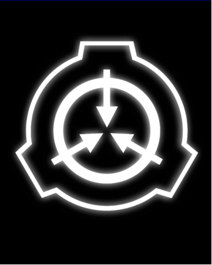

ZAWARTOŚĆ TEGO DOKUMENTU JEST OGRANICZONA DLA PERSONELU POZIOMU >>$ERROR<< LUB WYŻSZEGO.
Nie trzeba mówić, że nie powinieneś oglądać tych plików. Ja mówię: podejmij ryzyko. Zaszedłeś tak daleko.
Niektóre z poniższych informacji są prawdziwe. Niektóre z nich są fałszywe, wręcz absurdalne. Czasem wiem na pewno, czasami nie. Czasami skłamię. To nie ma znaczenia. Cokolwiek Ci tu powiedziałam, ktoś gdzieś w to wierzy. A wiara ma moc.
Uświadom sobie także, że Rada O5 może nawet nie istnieć.
—Czarna Królowa
To są ludzie, którzy mają pełną kontrolę nad Fundacją.
Każdy członek O5 wie prawie wszystko, co trzeba wiedzieć o Fundacji i jej działaniach. Pomiędzy nimi wszyscy znają każdy sekret, który posiada Fundacja
Większość pracowników Fundacji spędza całą swoją karierę, nie widząc ich. Członkowie poniżej 2 Poziomu Upoważnienia nawet nie wiedzą, że istnieją. Większość osób spoza Fundacji nigdy o nich nie słyszała lub nie sądzi, że są prawdziwi.
Większość się ich boi. O5 wchodzi do pokoju i wszyscy moczą spodnie. Tak się dzieje, gdy masz najwyższą władzę nad jedną z najbardziej przerażających organizacji w historii świata.
Ten dokument pokaże ci sprzeczne raporty na temat każdego z członków Rady O5.
Moje badania były wyczerpujące, ale sama natura mojego wroga sprawia, że nie można stwierdzić, która odpowiedź jest prawdziwa.
Być może jest wiele osób dzielących każdy numer O5. Może dziesiątki. Ale może jest tylko jeden. Być może tylko jeden z każdego z raportów jest prawdziwy lub wszystkie raporty są różnymi aspektami jednej osoby, wliczając dublerów i dezinformację.
Być może żadna z nich nie jest prawdziwa. Koniec tych akt przedstawia dobrze przygotowane raporty, które podważają prawdziwość prawie każdego założenia tutaj. Musisz uważnie osądzać.
